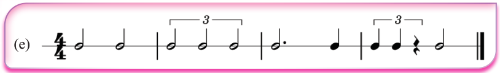
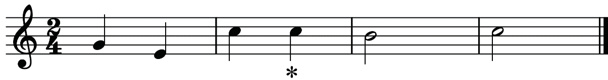
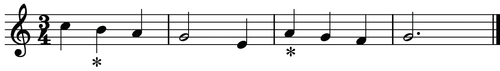
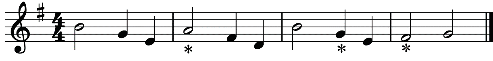

Exercise 1.1
Study the following melodies and insert triplets to replace the notes marked with a star (*).



Time signatures
Time signatures in music are an essential part of rhythm helping musicians understand how beats are grouped in a piece. They help to show the number of beats in each measure and which note gets one beat. Understanding how time signatures affect the feel of a piece of music enables a musician to interpret and perform music effectively.
Simple time signatures
In simple time signatures, each beat can be divided into two equal parts. These are called “simple” because each beat naturally divides into two, making them easy to count and play. In this section, you will be introduced to simple time signatures (two-two, three-two, four-two and three-eight).